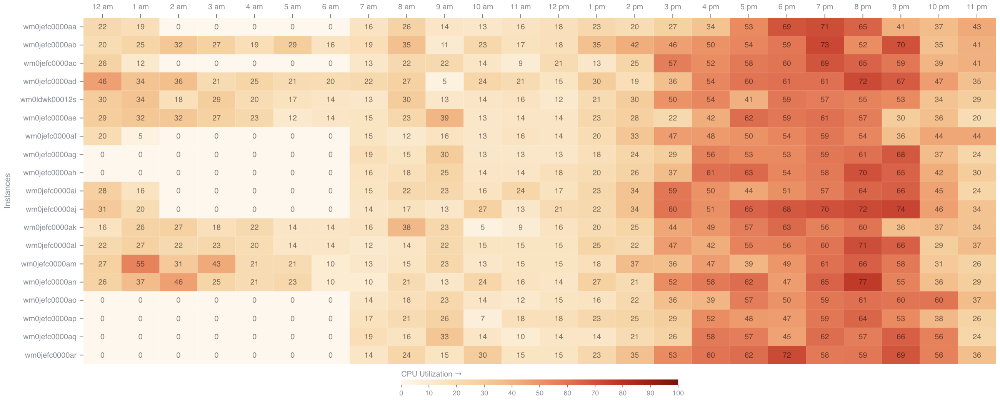

How CloudDIET works
Daily read-only profiling flows into Azure-specific analysis, prioritized actions, and measurable cost outcomes — then keeps the loop closed as Azure changes.
Billing, telemetry, and configuration metadata collected without data-plane access.
Normalized by subscription, resource, and service.
Find underutilization, waste, and misconfigurations, then rank opportunities by savings, effort, and risk.
Utilization · Fit · Waste
Resource-level pattern detection.
Dashboards and drilldowns, prescriptive actions, and realized-savings tracking.

CloudDIET profiles billing, configuration, and usage so it can apply the right optimization logic to each service family.
No agents, no deployment. Configure a read-only Service Principal and reporting starts quickly.